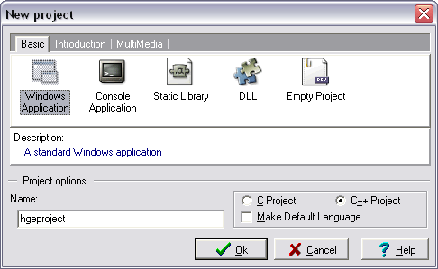
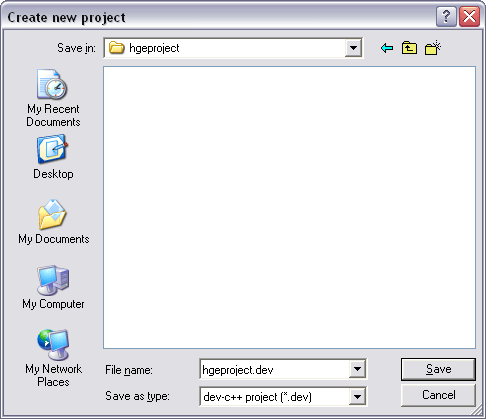
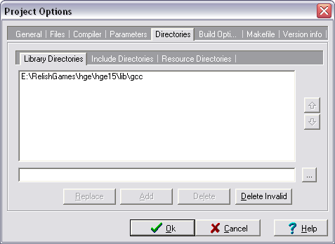
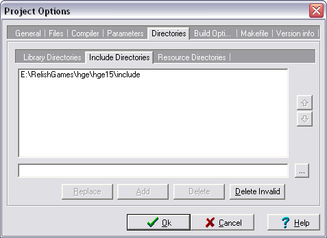
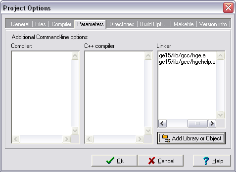

Dev C++ 5
1. Create blank Win32 Application project
Open File->New->Project...->Basic dialog tab. Type in your project name
and select Windows Application icon:

Press Ok.
On the next screen select or create a folder for your project and press Save:

2. Set headers and libraries path
Open Project->Project Options->Directories dialog tab and select Library Directories sub-tab.
Press ... button, browse for HGE "lib\gcc" directory and press Ok. Then press Add:

Now select Include Directories sub-tab and repeat the operation for HGE "include" directory:

Don't press Ok for now.
3. Add libraries to the project
In the same dialog select Parameters tab, press Add Library or Object button, browse for "hge.a"
and press Open. Repeat the same for "hgehelp.a":

Press Ok.
4. Start coding!
Include hge.h to access HGE functions. See Tutorials section for basic code examples.
|